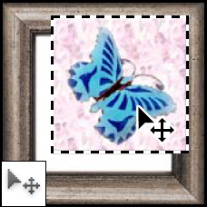
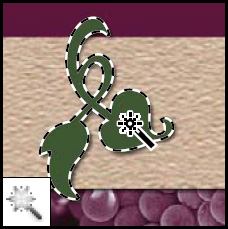

|
||
|
Las herramientas de marco.- realizan selecciones rectangulares, elípticas, de fila única y de columna única. | |
|  | La herramienta mover.- mueve selecciones, capas y guías. | |
|
Las herramientas de lazo.- realizan selecciones a mano alzada, poligonales (rectilíneas) y magnéticas (ajustables). | |
|
La herramienta selección rápida.- le permite "pintar" rápidamente una selección mediante una punta de pincel redonda ajustable. | |
|  | La herramienta varita mágica.- selecciona áreas de colores similares. | |
|
||